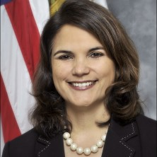

Ramesh Advani, Director of Grants Management, Massachusetts.
Ramesh Advani, Director of Grants Management, Massachusetts.
Ramesh Advani, Director of Grants Management, Massachusetts.
Cornelia Chebinou has been the Director of the Washington office of the National Association of Auditors, Comptrollers and...
Beth Cobert is the Deputy Director for Management. She was confirmed on October 16, 2013. Cobert previously served nearly thirty years at...
Nani Coloretti was appointed as the U.S. Department of the Treasury's Assistant Secretary for Management by President Obama on November 15, 2012.
Rep. Elijah Eugene Cummings is the U.S. Representative for Maryland’s 7th congressional district, serving since 1996. He is a member of the...
Dick Ginman is the Government Accountability and Transparency Board chairman and Director of Defense Procurement and Acquisition Policy (DPAP), U.S. Department of...
Amy Haseltine is the Associate Deputy Assistant Secretary, U.S. Department of Health and Human Services.
Christina Ho has emerged as a leader in pursuit of improved federal financial data quality, data display on sites such as USASpending.gov and data access.
 Hudson Hollister is the founder and Executive Director of the Data Transparency Coalition. Prior to founding the...
Hudson Hollister is the founder and Executive Director of the Data Transparency Coalition. Prior to founding the...
 Congressman Darrell Issa is the Republican U.S. Representative for California's 49th congressional district, serving since 2001.
Congressman Darrell Issa is the Republican U.S. Representative for California's 49th congressional district, serving since 2001.
Jonathan Kraden, Senior Professional Staff, Senate Homeland Security and Governmental Affairs Committee.
David A. Lebryk was appointed the first Commissioner of the U.S. Department of the Treasury’s Bureau of the Fiscal Service (Fiscal Service) on...
Karen Lee, Chief of Financial Reporting, Office of Management and Budget Office of Federal Financial Management.
 Don McCrory is a Principal in PwC’s Public Sector Practice and is focused on supporting federal clients with agency performance management and sustainable cost...
Don McCrory is a Principal in PwC’s Public Sector Practice and is focused on supporting federal clients with agency performance management and sustainable cost...
Jason Mistlebauer, Grants Management, Arizona.
Todd Park is the Chief Technology Officer of the United States, replacing the United States’ first CTO Aneesh Chopra.
Robert Jones “Rob” Portman is an American lawyer and the junior United States Senator from Ohio and has been in office since 2011.
 Anne E. Rung was appointed as the Associate Administrator for Government-wide Policy for the U.S. General Services Administration on...
Anne E. Rung was appointed as the Associate Administrator for Government-wide Policy for the U.S. General Services Administration on...
Dan Subach, Grants Management, Wisconsin.
Kathleen S. Tighe was sworn in on March 17, 2010 as the Inspector General of the U.S. Department of Education. In December 2011, Ms. Tighe...
David M. Walker served as United States Comptroller General from 1998 to 2008, and is Founder and CEO of the Comeback America Initiative.
David C. Williams is the Inspector General (IG) for the U.S. Postal Service, in the United States Postal Service Office of Inspector General.
 Sen. Mark Warner is an American politician and the senior United States Senator from Virginia, in office since 2009. He is...
Sen. Mark Warner is an American politician and the senior United States Senator from Virginia, in office since 2009. He is...